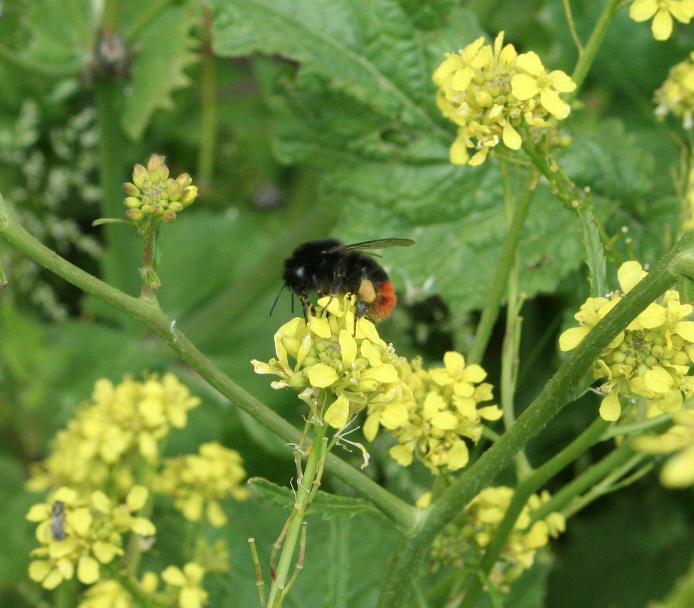

Bee evolution | Insect immunity | Host-parasite interactions
AG Colgan @JGU Mainz
Research interests
We are interested in studying genome evolution and expression. More specifically, we are interested in exploring how the genome has evolved to code for multiple behaviourally, morphologically and physiologically distinct phenotypes. Current research focuses on haplodiploid pollinators, such as bumblebees, honeybees and mason bees, to understand genes underlying phenotypic plascity and polyphenism. Previous research has examined the molecular mechanisms by which parasitic nematodes affect host phenotype, as well as examining genes related to sea migration and underlying sexually dimorphic traits in salmonids. We use a range of techniques including behavioural, computational and molecular techniques to address questions of interest.
Ecological and Evolutionary Genomics
Genes underlying phenotypic plasticity

We are interested in understanding the genomic architecture and molecular mechanisms underlying phenotypic plasticity, whereby a single genotype can give rise to multiple phenotypes. Social insects present a particularly interesting group as the genome not only codes for two distinct sexes but also behaviourally and physiologically castes, which perform different functions in the colony. Using comparative genomic and functional genomics, such as transcriptomics and proteomics, we investigate how such plasticity and diversity has evolved and is expressed within these groups. Previous work has focused on comparative genomic analyses of bumblebee species (Sadd et al. 2015, Genome Biology), as well as how differentially expressed genes can give rise to different life-cycle stages, castes and sexes in the buff-tailed bumblebee, Bombus terrestris (Colgan et al. 2011, BMC Genomics).
Response of ecological pollinators to environmental challenges

Bees are a highly successful group of pollinators, key for biodiversity stability and maintenance of agricultural crop yields. Despite their importance, bee populations are in decline with factors, such as habitat fragmentation and loss, pesticide usage, emerging pathogens and disease, competition from commercial bees, as well as climate change identified as contributing factors. Understanding how pollinators will respond to ongoing and future environmental challenges is therefore highly important. Previous research has assessed behavioural (Arce et al. 2017, Journal of Applied Ecology; Arce et al. 2018, Proc. B.) and molecular changes (Colgan et al 2019., Mol Ecol.) in bumblebees exposed to common neonicotinoid insecticides while current research examines the application of population genomics to understand genetic diversity and adaptive potential of contemporary populations.
EcoImmunology
Host-parasite interactions

Host-parasite interactions are among the most dynamic interactions in the biological world. Both parties exert enormous selection pressures that have shaped their individual, as well as co-evolution. I am interested in how such systems evolved and the molecular mechanisms used by hosts to avoid, resist or tolerate infection, as well as those used by parasites to find, infect and exploit hosts, especially those that result in dramatic changes in host phenotype. Previous research in this area has explored the genomic architecture underlying immune potential in bumblebees (Barribeau et al. 2015, Genome Biology), as well as how bumblebee immune expression changes in response to mating, diapause (Colgan et al. 2019, BMC Genomics), and nematode challenge (Colgan et al. 2020, Insect Molecular Biology).